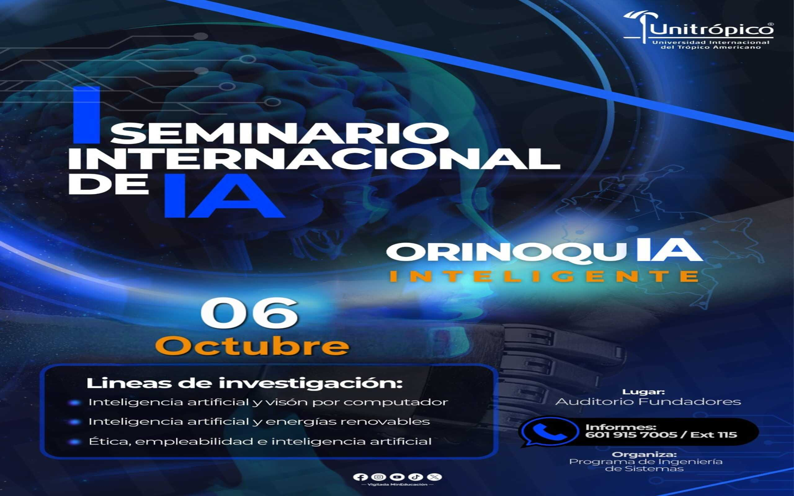

1er Seminario de Inteligencia Artificial Unitrópico
El Seminario de Proyectos de Unitrópico busca fomentar la innovación académica, investigativa y social a través de espacios donde estudiantes, docentes e investigadores presenten y discutan propuestas que generen impacto. Participa con tu proyecto, asiste a conferencias magistrales, talleres prácticos y sesiones de networking.
🎯 Objetivo General
Fortalecer los procesos de investigación aplicada y la formación de capital humano en la Orinoquía mediante el intercambio de conocimiento científico en Inteligencia Artificial (IA), con énfasis en visión por computador, energías renovables, y las dimensiones ética y laboral.
¡Sumérgete en la innovación!
📅 El seminario se realizará el 6 de octubre de 2025 📅
📌 Información del Seminario
📍 Dirección: Cra. 19 #39-40, Yopal, Casanare
📅 Fecha: 6 de octubre de 2025
🚩 Lugar: Auditorio Fundadores
🕐 Hora: De 7:00 a.m. a 6:00 p.m.
📬 Contacto
📧 Correo: Tictropico@unitropico.edu.co
📱 WhatsApp: +57 301 360 5479
🌐 Instagram: @unitropico
🌐 Facebook: Universidad Unitrópico
🌐 Sitio web universitario: Unitrópico